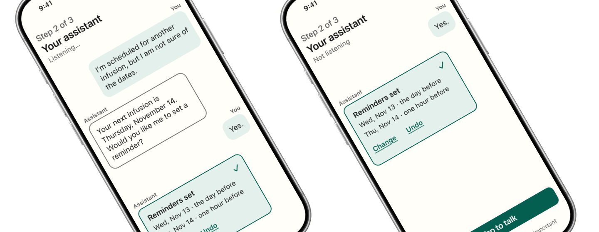
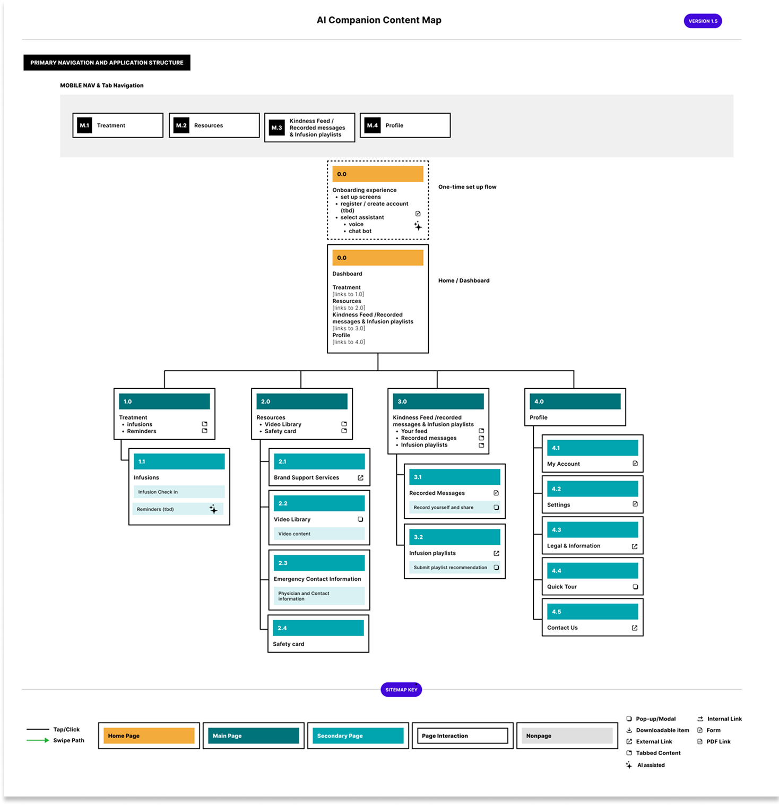
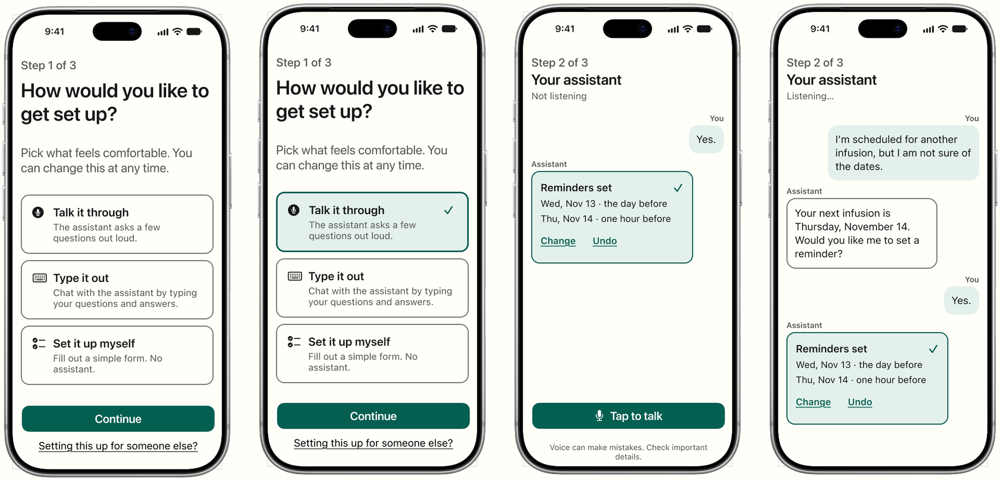

I designed the interaction model for a mobile companion app that helps older adults during recurring infusion therapy. The app brings together their treatment schedule, infusion log, support resources, playlists and an interactive patient community, the Kindness Feed.
Patients decide whether to use AI at all, and how. The assistant checks in before it does anything, every action can be undone, and the screen always says whether it is listening.
Client and product details are anonymized. Agency concept, 2025. Screens redesigned in my own design system for this case study.
The client asked for a companion app for patients on recurring infusions. These patients spend hours in a chair, often with a caregiver nearby, while managing schedules, side effects and a lot of uncertainty. Voice was not on the table. I pushed to include a voice-enabled assistant, and the client embraced it. The risk was an assistant that felt in charge, for people who already feel their treatment runs their calendar.
I was the sole UI and interaction designer. I interviewed the client’s senior stakeholders and subject matter experts, then defined the content map, the screen flows, the assistant’s conversations and every interaction state. On the original project, I collaborated with a senior product designer who applied the visual layer of color and graphic elements. For this case study I rebuilt the key screens in my own design system.

I interviewed senior client stakeholders and subject matter experts about what the companion needed to include, and designed from the patient insights the client shared with us. Two themes shaped everything. Older adults wanted to feel in control, and anything that took effort would go unused.
The client’s approach drew on self-determination theory, Edward Deci and Richard Ryan’s model of motivation. People stay engaged when three needs are met: autonomy, competence and relatedness. I used those three needs as a test for every screen. I built the flows around one primary profile, an older adult who is comfortable with a phone but not with new technology.
Autonomy, competence, and relatedness are innate needs; satisfying all three predicts intrinsic motivation and well-being.
Onboarding offers three equal paths: talk with the assistant, type with it, or set things up with a simple form and no assistant at all. Nothing is preselected, so the app never nudges anyone toward AI, and the screen says the choice can be changed anytime. A link at the bottom lets a caregiver set the app up on someone’s behalf. Whichever path they pick, patients can also fill in their infusion log through the assistant or by hand.
A patient says they have an infusion coming up but are not sure of the date. The assistant finds it, then asks whether to set a reminder instead of setting one on its own. Once the patient says yes, the reply is a confirmation card that lists both reminders, with Change and Undo right on it. The patient can see exactly what the AI did and reverse it in one tap.
The header reads “Listening…” while the assistant is active and “Not listening” once it stops. Starting again takes one clearly labeled button, Tap to talk. The state never depends on a color or an animation the patient has to interpret. A short line under the button reminds patients that voice can make mistakes, so they check important details.

For each UI state, I checked the native iOS components in Xcode before designing. Older patients already know these patterns from their own phones, and engineering gets screens that map to real platform controls. Icons are SF Symbols for the same reason.
Main text runs 18 to 22 points and every tap target is at least 48 points tall. Body text and the primary button meet WCAG AAA contrast, and every other text pairing clears AA. Every message is labeled You or Assistant, so nobody has to work out who said what from bubble position or color. A selected option shows a checkmark as well as a color change. Voice commands carry the core flows, and a preloaded music library plays during infusions with no internet connection.
Rather than start a separate palette for this audience, I added a Companion mode to my existing color variables. It darkens the accent so white text reaches 7.6:1 contrast, adds a stronger border so card edges are visible, and introduces tokens for secondary text, selected surfaces and alerts. The same components render in either mode, so one system serves two very different audiences.
The Kindness Feed lets patients share encouragement using only pre-approved text and images, with a toggle between personal and community views. The assistant also offers to add a note for the patient’s caregiver, which keeps the people around the patient part of their care.
The client paused the project indefinitely after the concept phase, so it never shipped. It produced a complete interaction model: a content map, end-to-end flows for onboarding, the assistant, logging and the community feed, and a reusable pattern for giving patients a real choice about AI. The redesigned screens add a token-driven component set built for accessibility from the start.
Designing AI for people who are wary of it means making control obvious. The choice at onboarding, the undoable confirmation and the “Not listening” state are the decisions I would defend first. If the project resumed, I would test whether patients who start with the standard setup ever opt into the assistant later, and what prompts them to.
Healthcare agency client (anonymized)
Interaction Design
AI Experience Design
Design Systems
UI Designer
Interaction Designer
2025
Stakeholder interviews
Content map
Screen flows
Onboarding and assistant flows
Redesigned key screens
Figma
Figma variables
iOS 16 UI Kit
SF Symbols
Xcode (component reference)
ChatGPT (conversation and setup flow prototyping)